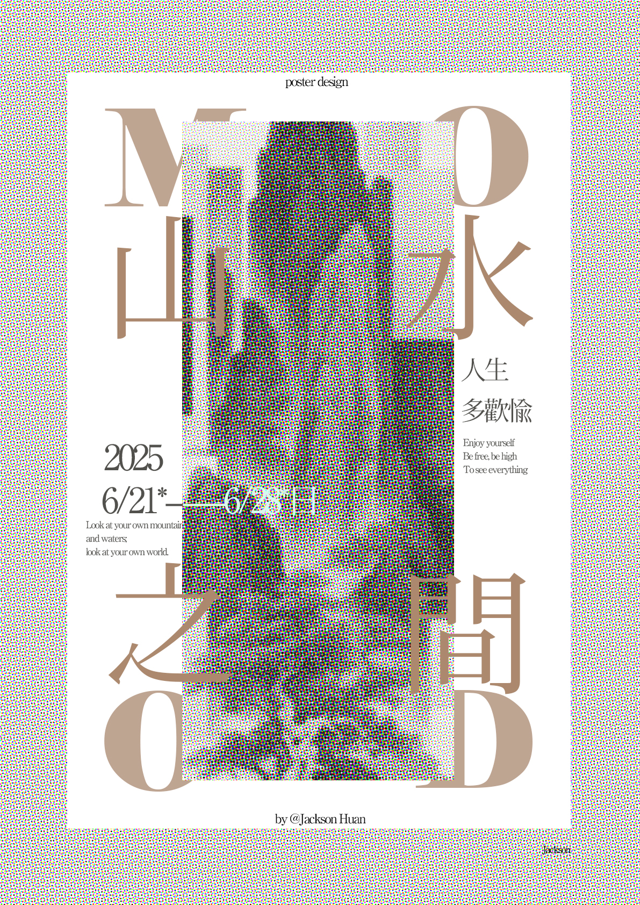
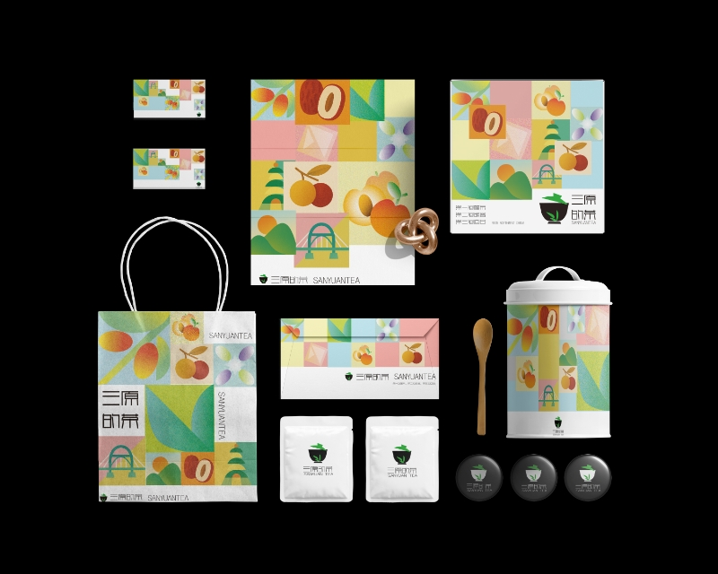

Branding / AIGC / Typography / Poster / Illustration
Creative Lab.
正式项目之外的视觉实验档案。
在风格、材质、文字与叙事之间持续练习。
这里收录了我在品牌版式、AIGC 材质、中文字体、文化主题海报与插画叙事方面的日常练习。 这些作品不完全以商业项目为导向，而是作为视觉语言、材质表现和版式节奏的持续探索。
01 / Brand & Editorial Visual
品牌视觉与物料延展实验
以品牌展板、延展海报与包装物料为核心，探索品牌视觉系统在不同媒介中的统一表达与延展方式。 这一部分收录了 @Jackson Brand 的山水视觉延展，以及“三原的茶”茶饮品牌的包装物料练习。
01-A / @Jackson Brand Extension
山水品牌视觉延展


01-B / Tea Brand Extension
三原的茶包装物料延展
围绕茶饮品牌视觉系统进行包装物料延展，包括手提袋、杯身、茶包、名片与动态展示， 强调色彩、图形与品牌识别在不同载体中的一致性。
Brand
Packaging
Mockup
Motion

Motion Preview
品牌动态展示
02 / AIGC Material Experiments
AIGC 材质与物体形态实验
通过生成式图像探索物体材质、质感变化与视觉识别，包括玻璃、软糖、云朵、金属、果冻与布料等形态。

03-04 / Daily Visual Archive
中文字体到东方视觉实验
从中文字体到文化公共议题，以手风琴画廊收录日常视觉练习。悬停或点击作品以完整查看。
05 / Illustrated Poster
插画叙事海报
以场景、人物与系列化画面为主要内容，探索插画在主题视觉、空间叙事与系列传播中的应用方式。


Back to